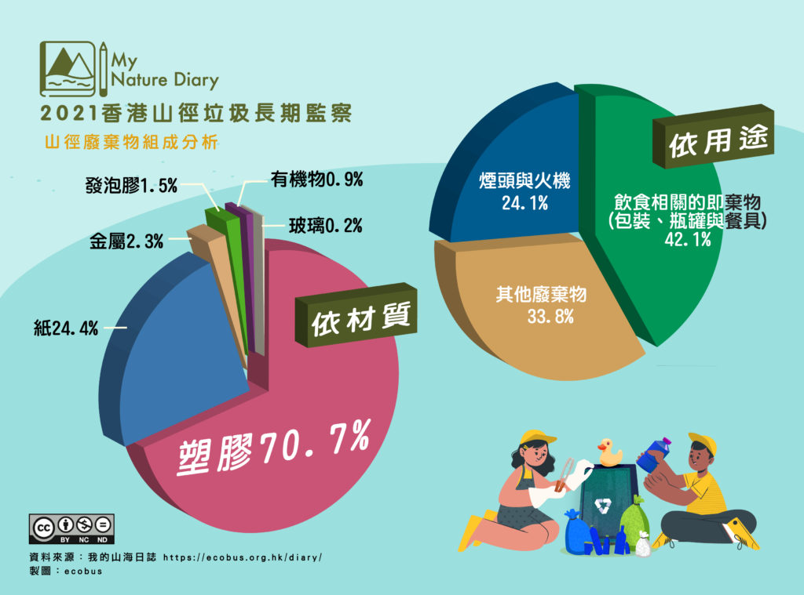

行山啦喂!
©copyright by
JJ22CM
夏天才出現的垃圾：蚊貼；冬天才出現的垃圾：暖包。 夏天雨季時(6月、8月、10月)山徑旁及休息位置雜草叢生，煙頭被丟棄的數目跟冬天除草後有明顯的差別，有可能是垃圾在草叢中難被看見，也有可能是亂丟煙頭到草裡易引起山火。
 資料來源：My Nature Diary - https://ecobus.org.hk/diary/2021/12/26/2021report/